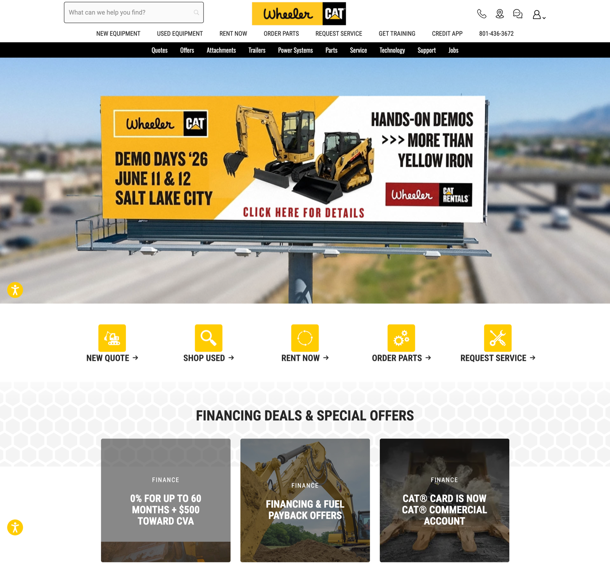
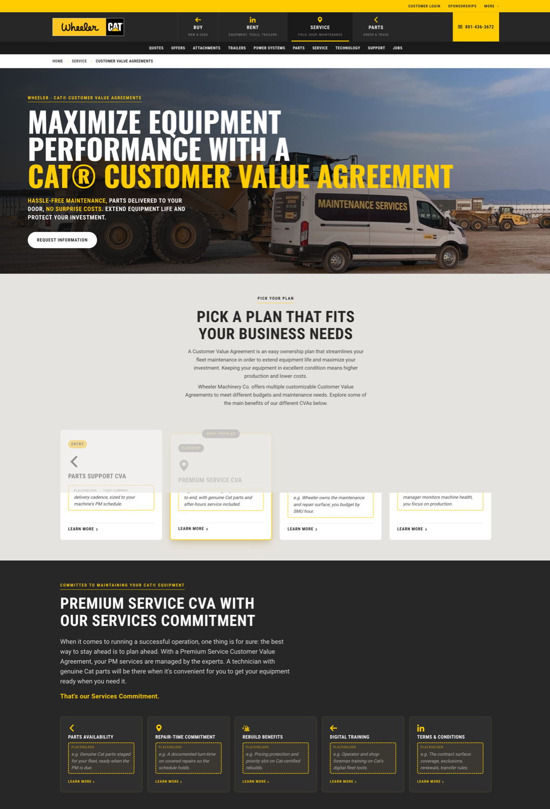
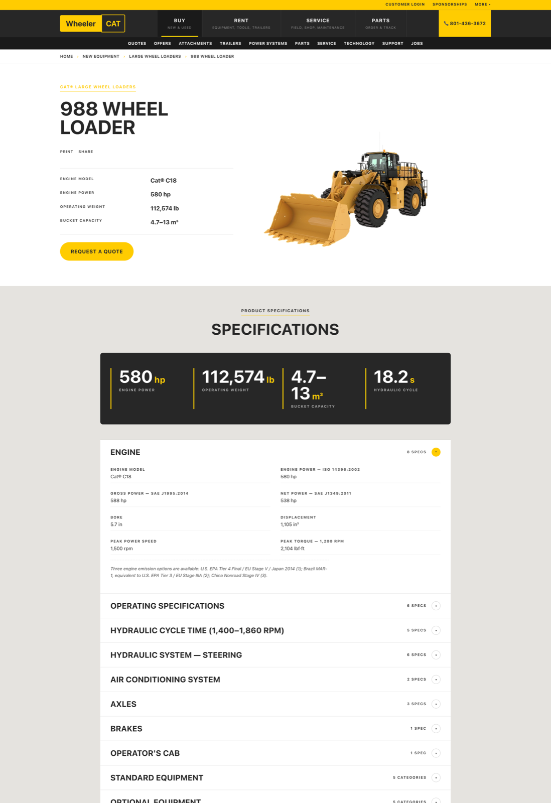
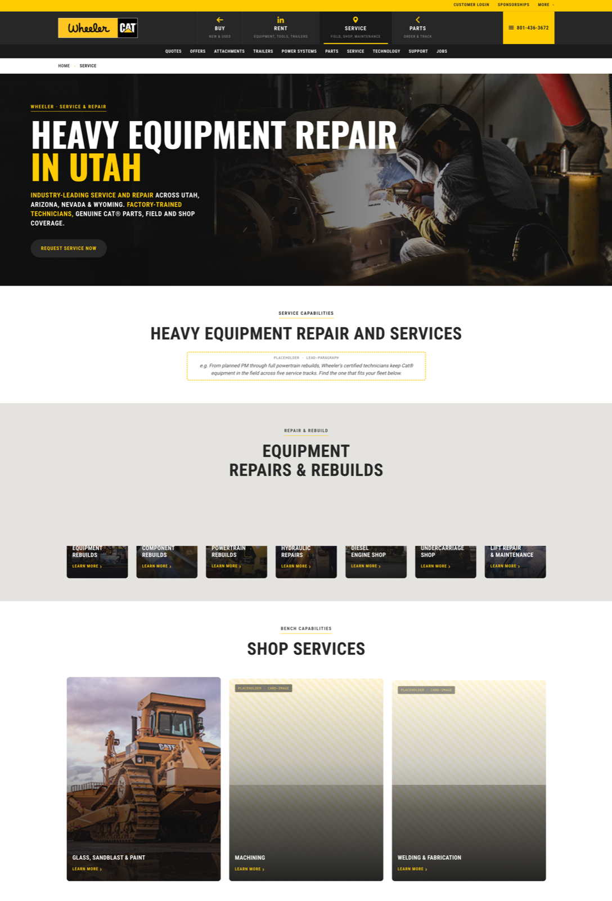
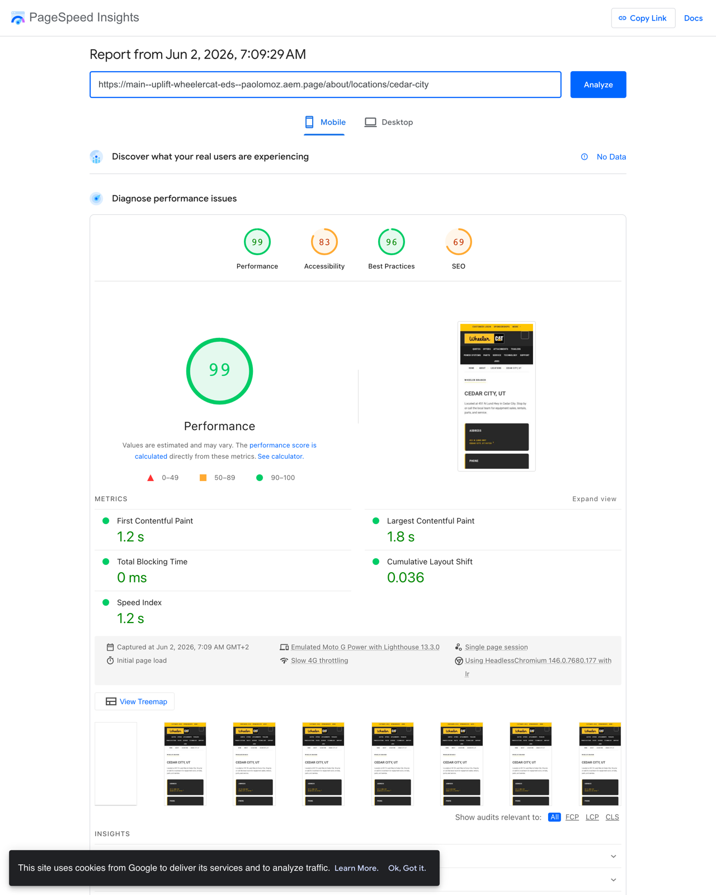

A WordPress catalog with ~8,000 source pages across 23 sitemaps, reimagined and partially re-built on AEM Edge Delivery. Not a complete cutover — a deliberate, partial import covering the load-bearing templates and content shapes, sized to prove the approach end-to-end before scaling it.
8,240 pages across 23 sitemaps. Heavy template repetition (1,000+ used-equipment pages, 250+ new-machine pages), uneven info content, no design system. Long-tail SEO + dealer chrome built up over a decade.
| Bucket | Shape | Pages |
|---|---|---|
| Cat used-equipment | detail pages, ~6 sitemaps | 5,142 |
| Cat new-attachments | detail pages, 2 sitemaps | 1,834 |
| Cat new-machines | nested-accordion spec pages | 249 |
| New-allied / power / technology | catalog detail variants | 316 |
| Category & family listings | listing-of-listings | 124 |
| Locations (branches + drop-boxes) | address + services per branch | 49 |
| Editorial / industries / about | info pages | 253 |
| Misc (blog, sponsorships, video pages, etc.) | info-derivative | 273 |
| Source site total | 8,240 |

Each phase has its own deliverable + user-review gate. The flow was discovered by building this site; it's now the canonical aem-import-site workflow.
Token, repo, structure checks before any work.
Walk sitemaps; cluster URLs into templates.
Per-template: prototype (A) vs build-direct (C); assign pageType.
One pixel-perfect page per template + CLS Day-1 gate.
Author every chrome destination before any batch.
Per-template extractor + renderer. No LLM at fill time.
--limit 5; review; approve.
Worker pool, concurrency 4, publish + index.
Crawl + cross-check; weighted-by-inbound missing list.
Top missing pages; redirects; CLS; orphan cleanup.
LLMs craft the creative work once per template — a static HTML prototype with all chrome canon, brand canon, content-shape canon spelled out. The user reviews + iterates on a single representative page. Approval locks the design.
The home page (A-rich Wheeler chrome) was the first prototype. Its tokens, fonts, motion, and chrome inheritance cascaded to every subsequent template — equipment-detail-new, equipment-detail-used, category-listing, location, info — all extended the same cascade-layer scaffold.
What stardust gives a project at this phase: a static HTML file you can open in a browser, edit in chat-driven iteration, and approve as the design contract. No EDS plumbing yet.



aem-import takes an approved prototype and emits the production EDS artifacts: per-theme stylesheet (cascade-layered), chrome fragments, DA-shaped content, engine patches.
Every prototype-to-EDS round-trip surfaced a discrete DA-pipeline trap or EDS-decorate quirk that got captured back into the skill's conventions catalogue. Each known-once-known finding bakes in so subsequent projects don't hit the same wall.
First template costs the most. Each next template extends the previous theme's cascade-layer scaffold and adds only its variant rules in @layer variant.
By the catalog template (allied/power/technology), the fill script was a thin wrapper around equipment-new's extractor — just a different URL-pattern parser. By the location template, the chrome was inherited and only the address + services-list panels were new.
This is the leverage point: creative work once, mechanical fill at scale. The first prototype is a multi-day design; the tenth template is a one-day delta.
Each template gets a fill-<template>.mjs (per-page extractor + DA renderer) and a batch-<template>.mjs (worker pool). No LLM at fill time — pure mechanical mapping, reproducible, verbatim.
// scripts/aem-import/fill-equipment-new.mjs (excerpt) export async function extractPage(url, browser) { // Playwright fetch, scroll, capture nested-accordion specs // → returns { h1, heroImage, specs: [...], videos, relatedAttachments } } export function renderDA(data) { // Emit DA-shaped HTML — breadcrumb, hero, specs, gallery, related, // cta-bar, metadata block. Verbatim content interpolation. } export async function pushToDA(path, htmlPath, { publish }) { // PUT admin.da.live → POST preview → POST live → POST index }
| Template family | Pages migrated | Batch wall-time | Concurrency |
|---|---|---|---|
| equipment-new (Cat catalog) | 247 | 15 min | 4 |
| equipment-used | 961 | 58 min | 4 |
| category-listings | 124 | 11 min | 4 |
| catalog (allied/power/tech) | 311 | 26 min | 4 |
| locations | 18 | 2 min | 3 |
| info pages | 233 | 18 min | 4 |
| hubs + sub-pages + action-pages | 30 | ~10 min | sequential |
| Total programmatic | 1,924 | ~2.3 hours |
Three pieces wired together turn DA from per-page CMS into a queryable content surface. Every page declares its structural role; every dynamic block filters the same /query-index.json.
properties:
title: { select: head > meta[property="og:title"] }
image: { select: head > meta[property="og:image"] }
template: { select: head > meta[name="template"] }
category: { select: head > meta[name="category"] }
pageType: { select: head > meta[name="pagetype"] }
Every page emits its pageType in the metadata block. Indexed once, queryable forever.
| detail | One product/unit/SKU | 1,767 |
| info | Static editorial | 237 |
| listing | Category members | 124 |
| hub | Top-level entry | 24 |
| location | Physical branch | 18 |
| portal | External-system stub | 6 |
Same fetch+filter pattern, three filter shapes. One block JS, ~120 lines.
Authoring breadcrumbs per page = 2,200× the maintenance cost. The breadcrumb block derives the trail from window.location.pathname + a slug→label override map. Page title used for the leaf when no override exists.
Migration script stripped 1,920 static breadcrumb HTML blocks in 6 hours — zero authored breadcrumbs remain.
Crawl one page per (template, pageType) bucket. Extract every internal href. Cross-check against /query-index.json. Sort missing destinations by weighted inbound link count.
Chrome links count as N × inbound (where N = total page count). Sampled-main links scale by template-family size. Dynamic-block links count as 1.
Result: 5–10 missing pages typically account for 80% of broken navigation. Building those 5–10 first unlocks the site.
Remaining 4 are all linked from a single source (low-impact long tail or deferred attachment templates).
EDS's edge-served HTML + lazy block decoration is the right starting point. The work was protecting it: locking chrome height, decorating critical blocks eagerly, metric-matching the fallback font, reserving footer + main height. Measured on a Cedar City location page on emulated Moto G Power, 4× CPU, slow 4G.

Measured 2026-06-02 on the live preview. Same template-class numbers across sampled equipment-detail, listing, and info pages.
CLS isn't the headline — but it is the most instructive metric, because the default EDS lifecycle (async chrome, async per-theme CSS, font swap, lazy decorate, lazy images) shifts layout in seven distinct events. Each fix exposes the next dominant source. The progression below is the actual diagnostic loop.
All fixes ship in global styles.css + per-theme cascade-layer rules + a tiny motion-script guard. Zero per-page work.
Playwright + CDP throttling (1.5 Mbps + 4× CPU) reproduces Lighthouse-class measurements locally. Source-attribution on every shift makes diagnosis a 30-second loop instead of guesswork.
2,428 entries (trailing-slash + orphan-to-canonical mappings) ship as a single file. Closes the 404 gap on legacy URLs + cleans up 253 mid-restructure orphans without re-batching content.
The aem-import-skill branch on adobe/skills now carries the full workflow: 10-phase canonical flow, 7-pageType taxonomy, CLS day-1 checklist, dynamic-block recipes, mass-edit utility, link-audit utility, redirects pattern, completion-report template, and the ready-to-copy .mjs utilities.